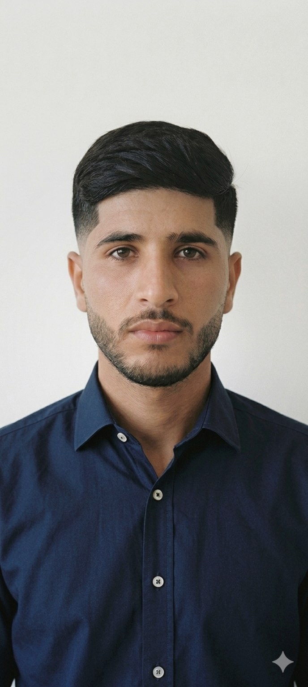

À propos

Je m'appelle Soufiane Fhaili, passionné d'informatique et de cybersécurité. Après un Bac Sciences Physiques à Safi, j'ai obtenu un Diplôme Technicien Spécialisé en Infrastructure Digitale option Cybersécurité, puis une Licence Professionnelle en Informatique et Mathématiques Appliquées.
J'ai choisi l'enseignement parce que je crois que le partage des connaissances est ce qui fait avancer. La cybersécurité m'a appris une chose : la technologie n'a de valeur que si elle est comprise et maîtrisée. Transmettre cette compréhension aux élèves, les voir progresser et s'approprier les outils numériques — c'est ce qui me motive chaque jour.
Ce portfolio retrace mon parcours au CRMEF Ibn Roch de Marrakech et mon stage au Collège Ibn Toumert. Plus qu'un simple dossier, il reflète ma conviction que l'enseignement est avant tout une relation humaine — faite d'écoute, de patience et d'engagement.
Contact
Email : fhaili.soufiane@gmail.com
Parcours académique
Pourquoi l'enseignement ?
Passionné de cybersécurité, j'ai toujours aimé partager mes connaissances et voir les autres progresser. Il n'y a pas de meilleur endroit pour le faire que l'enseignement. Rejoindre la CRMEF était pour moi l'opportunité de transmettre, d'inspirer et d'accompagner les élèves vers la compréhension des technologies qui façonnent leur quotidien.
— Soufiane Fhaili